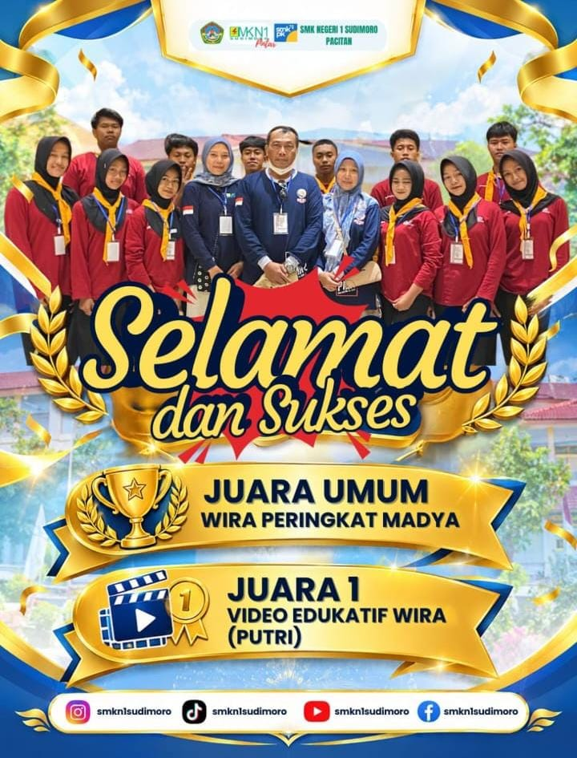
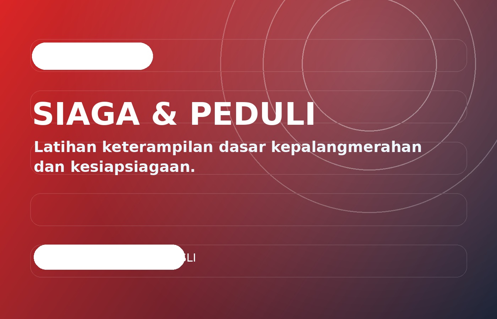
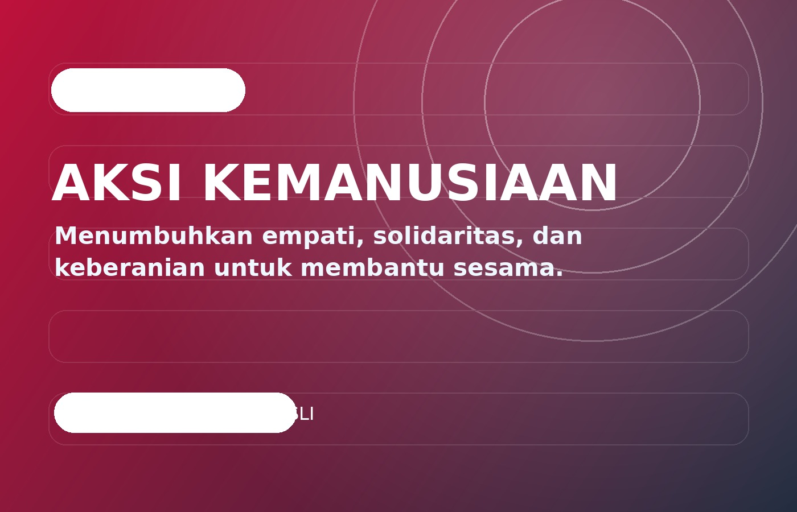

Kepedulian terhadap sesama
Pengalaman dibuat lewat kegiatan nyata, refleksi, dan kerja sama dengan anggota lain.
Komunitas kepalangmerahan di sekolah yang menumbuhkan kepedulian, kesiapsiagaan, solidaritas, dan pengetahuan dasar pertolongan.
Pengalaman dibuat lewat kegiatan nyata, refleksi, dan kerja sama dengan anggota lain.
Setiap anggota punya ruang untuk belajar mengambil peran dan menyelesaikan tantangan.
Komunitas dibangun untuk menciptakan pengalaman positif yang bisa dibawa ke sekolah dan kehidupan sehari-hari.
Konten di halaman ini bisa kamu sesuaikan dengan struktur kegiatan, jadwal resmi, prestasi, dan program kerja organisasi sekolah.
Review pengetahuan dan briefing keselamatan kegiatan.
Praktik skenario secara aman dan terarah.
Membahas pelajaran penting dan peningkatan keterampilan.
Foto yang kamu kirim dipasang sebagai dokumentasi penghargaan PMR di halaman utama organisasi.

Poster juga mencantumkan Juara 1 Video Edukatif Wira (Putri). Data pada poster dipertahankan sesuai foto asli yang dikirim.
Klik foto untuk membuka lightbox. File contoh sengaja disediakan supaya website langsung bisa dijalankan; ganti dengan foto asli di folder assets/images/.


Isi formulir dan pilih PMR Wira Kanesiro sebagai organisasi pilihanmu.